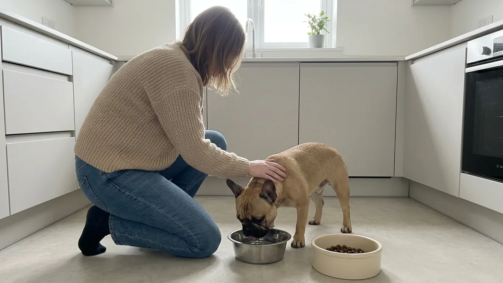

· Aktualizované · 5 min čítania
Pes má po nových granulách hnačku: čo robiť a kedy k veterinárovi

Sumár
Hnačka po nových granulách vzniká najčastejšie preto, že zmena krmiva prišla príliš rýchlo. Ak je pes inak čulý, zvyčajne odznie za 1–3 dni. Vráť sa k starému krmivu a daj psovi dosť vody. Nové granule potom zavádzaj pomalšie, počas 1–2 týždňov. K veterinárovi choď, ak hnačka trvá viac ako 2 dni, je v nej krv, pes zvracia alebo je apatický.
Kľúčové body
- Väčšina psov s hnačkou po zmene krmiva sa zotaví za 1–3 dni.
- Po náhlej zmene krmiva sa trávenie psa ustáli asi za 6 dní.
- K veterinárovi choď, ak hnačka trvá viac ako 2 dni. Hneď, ak vidíš krv, čiernu stolicu, zvracanie alebo apatiu.
- Granule nemusia byť vinníkom. Veterinári zapísali zmenu krmiva ako možnú príčinu hnačky len pri 4,6 % psov.
- Najčastejšia chyba: zmeniť granule zo dňa na deň a pri hnačke hneď skúšať ďalšie nové krmivo.
Čo je hnačka po zmene krmiva?
Hnačka po zmene krmiva je krátkodobá tráviaca porucha, ktorá vznikne, keď si črevo psa ešte nestihlo zvyknúť na nové granule. Pes má mäkkú až vodnatú stolicu, kaká častejšie a niekedy má plyny.
Od hnačky z infekcie, parazitov alebo zjedeného odpadu ju rozlíšiš podľa dvoch vecí: prišla krátko po zmene krmiva a pes je inak čulý, má chuť do jedla a pije.
Prečo má pes po nových granulách hnačku?
Najčastejšie preto, že zmena prišla príliš rýchlo a črevné baktérie si na nové krmivo ešte nezvykli. Príliš rýchly prechod na nové krmivo uvádzajú medzi bežnými príčinami hnačky veterinári z Cornellu aj britská charita PDSA.
Nové granule majú iné zloženie bielkovín, tukov, vlákniny a sacharidov. V hrubom čreve spracúvajú rôzne zložky krmiva rôzne baktérie. Keď sa krmivo zmení zo dňa na deň, baktérie a tráviace enzýmy nestíhajú. Časť živín sa potom dostane do hrubého čreva nestrávená a stolica zmäkne.
V jednej štúdii psom zmenili krmivo zo dňa na deň. Stolica im rýchlo zmäkla, a to pri prechode na tučnejšie aj na chudšie krmivo. Trávenie sa ustálilo asi za 6 dní.1 Ukazuje to, že hnačku môže spôsobiť už samotná náhla zmena.
Krmivo s viac tukom alebo bielkovinami môže trávenie zaťažiť viac. Presnú hranicu pre konkrétneho psa však štúdie nedávajú. Ďalšou častou príčinou je väčšia porcia. Nové granule majú inú energiu, a keď ich pes dostane rovnakú misku „od oka“, môže zjesť viac, než potrebuje.
Je hnačka po zmene granúl normálna a ako dlho trvá?
Mierna hnačka po zmene granúl je bežná. Ak je pes inak zdravý, zvyčajne prejde za 1–3 dni. Väčšina psov sa podľa PDSA zotaví za 1–3 dni, často aj bez liečby. Akútna hnačka u psov trvá v 78 % prípadov najviac 2 dni.2
„Normálna“ je však len vtedy, keď je pes čulý, má chuť do jedla, pije, nezvracia a v stolici nie je krv ani hlien. Kašovitá stolica je pri prechode bežnejšia ako vodnatá. Ak sa stolica 1–2 dni po návrate k starému krmivu zlepšuje, ide to dobrým smerom.
Za hnačku nemusia vždy môcť granule. Veterinári zapísali zmenu krmiva ako možnú príčinu len pri 4,6 % psov s náhlou hnačkou. Častejšie pes zjedol niečo nevhodné. Pri 40,1 % psov príčinu nezapísali vôbec.3
| Možná príčina | % |
|---|---|
| Príčina nezapísaná | 40,1 % |
| Zjedenie nevhodnej veci | 9,5 % |
| Gastroenteritída | 8,1 % |
| Kolitída | 4,6 % |
| Reakcia na protizápalové lieky | 4,6 % |
| Zmena krmiva | 4,6 % |
Ide o príčiny zapísané v záznamoch, nie o overené diagnózy. Psy, s ktorými majitelia k veterinárovi neprišli, v údajoch nie sú.
Zdroj: O'Neill a kol., PLOS One, 2025
Ak hnačka prišla presne so zmenou granúl, súvislosť je pravdepodobná. Ak však pes v ten istý deň niečo zjedol na prechádzke, dostal nový liek alebo je to šteňa, príčina môže byť iná. Vtedy sa poraď s veterinárom.
Kedy ísť s hnačkou po zmene krmiva k veterinárovi?
Ak hnačka trvá viac ako 2 dni. Hneď, ak vidíš krv alebo čiernu stolicu, pes zvracia, je apatický alebo prestane jesť. Tak to radia veterinári z Cornellu. Hnačka spolu so zvracaním psa odvodní rýchlejšie.4
| Situácia | Čo to znamená | Čo urobiť |
|---|---|---|
| Kašovitá stolica 1–2 dni, pes je čulý, má chuť do jedla a pije | bežná reakcia na zmenu krmiva | vráť sa k starému krmivu a sleduj psa |
| Riedka stolica dlhšie ako 2 dni | stav sa nezlepšuje | zavolaj veterinárovi |
| Čerstvá krv v stolici alebo čierna stolica ako decht | možné krvácanie v tráviacom trakte | k veterinárovi ešte v ten deň |
| Hnačka a k tomu zvracanie | pes sa rýchlejšie odvodní | zavolaj veterinárovi |
| Opakovaná hnačka alebo zvracanie počas 24 hodín a k tomu krv, apatia alebo odmietanie jedla | môže ísť o vážnejší problém | na pohotovosť |
| Apatia, slabosť, kolaps, bolesť, pes kňučí alebo sa trasie | vážny stav | na pohotovosť |
| Hnačka u šteňaťa, starého psa alebo psa na liekoch | zvýšené riziko | zavolaj veterinárovi |
Šteňa, starý pes, pes s iným ochorením alebo pes na liekoch patrí s hnačkou k veterinárovi vždy. Platí to najmä pri protizápalových liekoch.5 Ak máš podozrenie, že pes zjedol niečo jedovaté, volaj veterinára hneď.
Čo robiť, keď má pes po nových granulách hnačku: 6 krokov
Vráť sa k starému krmivu a daj psovi vodu. Nový prechod začni až po spevnení stolice a pomalšie, počas 1–2 týždňov. Postup vychádza z odporúčaní Cornellu a PDSA.
- Skontroluj varovné príznaky. Pri krvi, čiernej stolici, zvracaní, apatii alebo pri šteňati najprv zavolaj veterinárovi.
- Vráť sa k starému krmivu. Dávaj ho, kým sa stolica nespevní. Ak staré granule nemáš, poraď sa s veterinárom.
- Daj psovi stále čerstvú vodu. Pri hnačke pes stráca tekutiny.
- Vynechaj pamlsky a zvyšky zo stola. Kým hnačka neprejde, nedávaj psovi pamlsky ani výdatné jedlo.
- Sleduj stolicu a správanie 1–2 dni. Všímaj si, či sa stolica zlepšuje a či má pes chuť do jedla a je čulý. Ak sa to do 2 dní nezlepší, zavolaj veterinárovi.
- Začni nový prechod pomalšie. Keď je stolica znova v poriadku, pridávaj nové granule k starým po menších krokoch počas 1–2 týždňov. Dávku odvažuj na gramy.
Citlivému psovi môžeš každý podiel nového krmiva nechať o pár dní dlhšie. Ak sa hnačka vracia pri každom pokuse o zmenu alebo stolica nie je v poriadku ani na starom krmive, nejde o bežnú reakciu. Vtedy to rieš s veterinárom.
Časté otázky
Môžem psovi pri hnačke dať varenú ryžu s mäsom? Áno, Cornell uvádza ľahkú stravu, napríklad varené kuracie alebo chudé hovädzie mäso s bielou ryžou. Na dlhodobé kŕmenie sa nehodí. Ak sa stolica do 2–3 dní nezlepší, choď so psom k veterinárovi.
Mám psa pri hnačke nechať hladovať? Cornell spomína možnosť vynechať jedlo na 12–24 hodín a potom dávať ľahkú stravu. Pri šteňati, starom alebo chorom psovi sa najprv poraď s veterinárom. Vodu musí mať pes stále.
Pomôžu pri náhlej hnačke antibiotiká? Pri nekomplikovanej hnačke väčšinou nie. Štúdia na 894 psoch nenašla rozdiel v zotavení psov s antibiotikami a bez nich.6 Autori odporúčajú antibiotiká pri hnačke obmedziť.
Môžem psovi dať lieky na hnačku pre ľudí? Bez porady s veterinárom nie. Psy potrebujú iné dávky a nie každý liek je pre ne vhodný.
Mám nové granule po hnačke úplne vyradiť? Nie hneď. Jedna hnačka po rýchlom prechode ešte neznamená, že pes krmivo neznáša, a pomalší prechod často stačí. Ak sa hnačka vracia aj pri pomalom prechode, poraď sa s veterinárom.
Zhrnutie
- Hnačka po nových granulách vzniká najčastejšie pre príliš rýchlu zmenu. Ak je pes čulý, zvyčajne prejde za 1–3 dni.
- Doma: vráť sa k starému krmivu, daj psovi vodu, vynechaj pamlsky a 1–2 dni ho sleduj.
- K veterinárovi: hnačka dlhšie ako 2 dni, krv alebo čierna stolica, zvracanie, apatia, odmietanie jedla. So šteňaťom, starým alebo chorým psom vždy.
- Ďalší krok: keď sa stolica spevní, začni nový prechod pomalšie, počas 1–2 týždňov, s dávkou odváženou na gramy.
Granule pre psa s citlivým trávením
Dennú dávku spočítame na gramy, aby pes pri prechode nezjedol viac, ako potrebuje. Pri citlivom trávení vyberáme granule s jedným druhom mäsa, ak tomu nebráni iná potreba psa.


Poznámky
- Lin a kol., Animal Microbiome, 2022. Štúdia sledovala 12 zdravých dospelých bíglov. Látky v stolici sa ustálili približne za 2 dni, zloženie črevných baktérií približne za 6 dní. Jedno krmivo malo v sušine 41 % bielkovín a 24 % tuku, druhé 28 % bielkovín a 14 % tuku. Stolica zmäkla pri prechode oboma smermi. Zo štúdie na 12 psoch nemožno robiť pevné závery pre všetky psy. ↩
- Pegram a kol., PLOS One, 2023. ↩
- O'Neill a kol., PLOS One, 2025. Britská štúdia prešla záznamy 1 835 psov s akútnou hnačkou u veterinára. Akútnu hnačku malo za rok približne 8,2 % psov v sledovanej populácii. ↩
- Cornell Riney Canine Health Center: Diarrhea (2024) a When to go to the ER (2025). Podľa druhého zdroja môže opakované zvracanie alebo hnačka počas 24 hodín, najmä s krvou, apatiou alebo odmietaním jedla, znamenať vážnejší problém. ↩
- PDSA, Diarrhoea after a change of food, 2019. ↩
- Pegram a kol., PLOS One, 2023. ↩
Zdroje
- Diarrhea – Cornell University College of Veterinary Medicine, Riney Canine Health Center, 2024 – vet.cornell.edu/departments-centers-and-institutes/riney-can
- When to go to the ER – Cornell Richard P. Riney Canine Health Center, 2025 – riney.vet.cornell.edu/member-benefits-health-tips/when-to-go
- Diarrhoea after a change of food – PDSA (People's Dispensary for Sick Animals), 2019 – pdsa.org.uk/pet-help-and-advice/pet-health-hub/conditions/di
- Longitudinal fecal microbiome and metabolite data demonstrate rapid shifts and subsequent stabilization after an abrupt dietary change in healthy adult dogs – Lin a kol., Animal Microbiome, 2022 – pmc.ncbi.nlm.nih.gov/articles/PMC9341101/
- Epidemiology and clinical management of acute diarrhoea in dogs under primary veterinary care in the UK – O'Neill a kol., PLOS One, 2025 – pmc.ncbi.nlm.nih.gov/articles/PMC12156985/
- Target trial emulation: antimicrobials or gastrointestinal nutraceuticals for acute diarrhoea in dogs – Pegram a kol., PLOS One, 2023 – pmc.ncbi.nlm.nih.gov/articles/PMC10550114/